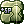
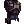

Lucky's Soul Reaper Guide
| Soul Reaper | |||||||||||||||||||
|---|---|---|---|---|---|---|---|---|---|---|---|---|---|---|---|---|---|---|---|
| Job Base: | Taekwon Kid | ||||||||||||||||||
| Written By: | Lu7ky | ||||||||||||||||||
| |||||||||||||||||||
Overview
Welcome to the world of Ragnarok. Soul Linker (and by extension Soul Reaper) are my favorite class. They can make any class more powerful and even (in some cases) unlock new abilities for them.
- All kicking skills become useless at and above the Soul Linker job so make sure to reset your skills to include them only if you need them for enough points spent to move on.
Soul Reaper pros:
- Very useful to buff other Soul Linkers and Reapers with Ka skills, or other players with specific Spirit skills.
- Extremely useful as Soul Linkers when Soul Linked themselves, allowing Ka skills on all players.
- Very good buffs as Soul Reaper.
- Decent damage at higher levels and with good equipment.
Soul Reaper cons:
- Limited gears and equipment, using mostly all class, non-novice and mage based armors and weapons.
- Without a Soul Link (on themselves) can only use some important Soul Linker skills on themselves and other Soul Linkers.
- Heavy reliance upon Souls for buffing. (Often hard to keep track of)
- Long cast times initially.
- A little hard on the learning curve as the attack skills require you to lead up to them like a combo.
- A lot of fixed cast time skills.
Stat Overview
- Strength (STR) Provides ATK for melee weapons. Increases weight limit and resistance to certain skills.
- Agility (AGI) Adds FLEE, ASPD and Soft DEF (much less than VIT would). Shortens animation delay. At 100 points (Including Bonuses) gives Immunity to Sleep and Bleeding.
- Vitality (VIT) Adds Max HP, Soft DEF, HP recovery and makes healing items more effective. At 100 points (Including Bonuses) gives Immunity to Stun, Poison and Deadly Poison.
- Intelligence (INT) Adds MATK Max SP, Soft MDEF, SP recovery and makes SP restoring items more effective. Decreases Variable Cast Time (Half as much as DEX). At 100 points (Including Bonuses) gives Immunity to Silence.
- Dexterity (DEX) Adds ATK for bows and a reduced amount for melee weapons. Increases HIT, ASPD, MATK and Soft MDEF. Decreases Variable Cast Time.
- Luck (LUK) Adds ATK (less than STR), MATK (less than INT), CRIT, HIT, Perfect Dodge and FLEE. At 100 (Including Bonuses) points gives Immunity to Curse.
Skills
Notable skills include the links for your party members and the Es type. Ka type skills are more useful with a second Soul Linker as you can use them on allies only with a proper soul link to you.
After hitting Soul Linker, Taekwon skills required include no attack (kick) skills mostly the buffs, Sprint and High Jump for movement and fun.
Taewkon Skills
| Skill | Notes |
|---|---|
 Sprint Sprint
|
Use this skill to run really fast in the direction you are facing, good for getting away or towards something. |
 High Jump High Jump
|
Useful for jumping over things and to things. It can jump over obstacles such as walls and needs a landing cell present (must be able to land). |
 Peaceful Break Peaceful Break
|
Very rarely used, can restore HP really fast sitting next to a Taekwon base. |
 Happy Break Happy Break
|
Very rarely used, can restore SP really fast sitting next to a Taekwon base. |
 Khop Khop
|
Greatly increases your physical attack power in parties. |
 Mild Wind Mild Wind
|
Changes your element of attack and allows use of Esma while active. Useful for leveling at level 7(holy) and 4(fire) as most monsters are weak to these elements. |
 Tumbling Tumbling
|
Requires level 7 Flying Kick, blocks certain kinds of attacks such as long ranged attacks at a 20% rate after using Sprint (Level 7 or higher). Best sacrificed skill points would be from the Break Skills. |
- Note, Kick skills do not work with Soul Linker Job and above.
Spirit Skills
| Skill | Notes |
|---|---|
 Alchemist Spirit Alchemist Spirit
|
Makes an Alchemist based class heal much more with potion pitcher skills, unlocks special brewing skills and Aid Berserk Potion. |
 Taekwon Spirit Taekwon Spirit
|
With so few Star Gladiators, this can be left level 1 but it allows them to use their Union skills. |
 Assassin Spirit Assassin Spirit
|
Doubles Sonic Blow damage when used. |
| Crusader Spirit | Shield Boomerang never misses, does double the damage and can be used twice as quickly after a use. |
| Bard and Dancer Spirit
|
Very important skill, performer classes can now affect themselves with their own skills, move faster and use the other's songs/dances. |
 Super Novice Spirit Super Novice Spirit
|
With so few Super Novices this isn't really a requirement but can really help them out by allowing them to equip different items and erases their death count (also removable by Healer NPC in NovaRO). |
 Blacksmith Spirit Blacksmith Spirit
|
Allows the use of Advanced Adrenaline Rush which greatly boosts the party's ASPD. (If they use melee weapons). |
 Soul Linker Spirit Soul Linker Spirit
|
Allows the use of Ka skills on all allies, a very helpful skill should you have another Soul Linker with you. |
 Rogue Spirit Rogue Spirit
|
Not very useful, allows a Rogue to move faster while invisible and they cannot be debuffed high rank alchemist potions are more effective on them. More useful in PVP situations. |
 Knight Spirit Knight Spirit
|
Very situational only useful on a Knight who prefers a 1 handed weapon allowing a quicken spell related to it. |
 Hunter Spirit Hunter Spirit
|
A lot of players in NovaRO are Hunters/Snipers however this skill is situational at best allowing beast strafing and more damage to beasts by STR amount. Turtle dungeon leveling for example. |
 Rebirth Spirit Rebirth Spirit
|
Unless helping a new player after High Novice this skill will not be used as a player with this level will be out of range for experience share increases their stats. |
 Monk Spirit Monk Spirit
|
The Combo Finish attack becomes a 5x5 cell splash attack, SP can be regained in Critical Explosion (this is used often) and less SP is used with most skills. |
 Priest Spirit Priest Spirit
|
Not very useful unless you have a priest spamming Holy light as it's damage is greatly increased. |
 Sage Spirit Sage Spirit
|
Auto Spell now uses level 10 bolts allowing for great damage. |
| Wizard Spirit | Very useful allows a Wizard to use certain skills without consuming their gemstones (they must still have one). |
- Higher levels of Spirit skills will reduce SP consumption and increase length, it is therefore recommended to use level 1 when not needed as often and level 5 when you have more of that class in your group.
Es Skills
| Skill | Notes |
|---|---|
| Estin | Can be followed by Esma, also damages Small monsters. |
 Estun Estun
|
Can be followed by Esma, also damages Medium monsters. |
 Esma Esma
|
Bolt like skill, does elemental damage based on your Mild Wind skill. |
 Eswoo Eswoo
|
Shrinks a monster, greatly reducing their walking speed. |
 Eske Eske
|
Increases monster's ATK by +300%, but halves their DEF. Can be followed by Esma. |
 Eska Eska
|
Forces monster into a Steel Body like state, ASPD is reduced, MDEF is set to 90 and DEF changes randomly every second (enhanced). |
Ka Skills
| Skill | Notes |
|---|---|
|  Kaina | Great skill for the Es tree, allows minimal SP consumption of Estin, Estun and Esma at base level 70+ and increases max SP. |
| Kaizel | Revive and buff yourself with Kyrie Eleison instantly for up to 3 seconds when active. |
 Kaite Kaite
|
Reflects enemy spells at a high rate. |
 Kaahi Kaahi
|
Probably the best skill of the Ka SP is consumed on defense, to restore HP when an enemy is using a physical attack. |
| Kaupe | Allows you to absolutely evade an enemy attack but only the first one. |
Soul Reaper Self Buff Skills
| Skill | Notes |
|---|---|
 Soul Collect Soul Collect
|
Gains souls over time, that time is reduced by levels. |
| Soul Energy Research | Increases max amount of souls per level. |
 Soul Reaper Soul Reaper
|
Harvests souls for use when attacking (any kind). Consumes 2 souls. |
Soul Reaper Party Buff Skills
| Skill | Notes |
|---|---|
 Soul Unity Soul Unity
|
Buffs yourself and those in the party around you with HP recovery and a special link-like status for use of Kaute. Consumes 10 souls |
 Kaute Kaute
|
Consumes your HP to heal the SP of the target affected by Soul Unity or other Soul Linker based classes. Consumes 5 souls. |
 Soul Revolve Soul Revolve
|
Consumes a linked soul buff to recover SP on a target. Affected targets will lose their soul buff. |
 Golem Soul Golem Soul
|
Increases DEF and MDEF on target for the duration. Consumes 3 souls. |
 Falcon Soul Falcon Soul
|
Increases ATK and HIT on target for the duration. Consumes 3 souls. |
 Shadow Soul Shadow Soul
|
Increases CRIT and ASPD on target for the duration. Consumes 3 souls. |
 Fairy Soul Fairy Soul
|
Increases MAKT and decreases Variable Cast Time on target for the duration. Consumes 3 souls. |
Soul Reaper PvM Attack Skills
| Skill | Notes |
|---|---|
 Curse of Wicked Souls Curse of Wicked Souls
|
Cast Curse on and around a target by chance. Consumes 3 souls. |
 Curse explosion Curse explosion
|
Does Dark/Shadow Property magic damage on and around target, more if they are cursed. |
 Esha Esha
|
Does magic damage and slows a target, also allows use of Esma afterwards. Consumes 1 souls. Cannot be used on players. |
 Espa Espa
|
Does magic damage, more based on base level and allows use of Eswhoo afterwards. Consumes 1 souls. Cannot be used on players. |
| Eswhoo | Does magic damage on and around a target, more based on base level. Consumes 2 souls. Cannot be used on players. Can be followed by Esma. |
- I will not go into PvP skills as I do not do PvP.
Taekwon Portion
- This image is being finicky, Tumbling should be grabbed instead of the kick skills With a reduction to the Break skills.
Gameplay (and how to kick)
- This will be a fast stage in your time as NovaRO has increase experience amounts.
- Choose 1 type of kick with a stance for the purpose of leveling and max the kick. I recommend Tornado Kick for it's Area of Effect Damage
- You may use a second kick and stance if you can handle it as with 2 or more stances active all will try to activate and the right one needs to be chosen to follow through.
- In order to use a kick you will first need to prepare the stance by using the correct skill. Once the skill is used a "buff" will appear and you will randomly enter the stance, now, use the kick skill itself.
Support Build
Overview
Stats
- STR - 1+ Increases Weight limit.
- AGI - ~100 With bonus for sleep immunity also for Dodge and some status resists.
- VIT - ~100 With bonus for stun immunity (HP may still be low)
- INT - 100+ Semi- adjustable, for Cast time and SP pool and regeneration.
- DEX - 120 Increases HIT, but more importantly reduces cast time.
- LUK - 1/77 Not needed in this build/77 base DEX if using
 Arc Angeling Card.
Arc Angeling Card.
Skill Build (Soul Linker Portion) Example
- You can put 3 points into Kaupe when you have extra Soul Reaper skill points or take some from your 5 point link skills.
Skill Build Example

Equipment
| Item | Type | Way to obtain | Notes |
|---|---|---|---|
| Hitaikakushi [1] | Upper | Cash Shop | Reduces cast time, increases Critical Rate, Casts spells for and on you, (depending on refine levels), can add MATK. |
| Ancient Decoration of Rift [1] | Upper Headgear | Infinite Space | Adds Max HP and can be enchanted twice with stats or Max HP. |
 Heart Wing Headband [1] Heart Wing Headband [1]
|
Upper | Master of Coin | Reduces skill delay and SP consumption per 3 refines (including at 0). |
 Magical Booster [1] Magical Booster [1]
|
Mid | Custom Headgear Quest | No effect, combines with  Violet Halo [1] Can be enchanted with Violet Halo [1] Can be enchanted with  Booster Amplifier. Booster Amplifier.
|
 Poison Breath Poison Breath
|
Lower | Custom Headgear Quest | Combines with  Giant Snake Skin [1] to give Atk + 5 per 20 base Str Giant Snake Skin [1] to give Atk + 5 per 20 base Str
Reduce delay after attack by 3% per 20 base Agi. Reduce damage from neutral property attack taken by 1% per 20 base Vit. Reduce variable casting time by 4% per 20 base Int. Increase long ranged physical damage by 1% per 20 base Dex. Increase critical damage by 3% per 20 base Luk. |
|  Excellion Suit | Armor | Verus PLUTO_09. | Provides up to 10 VIT Increases maximum HP and is indestructable. Can be enchanted |
 Armor of Airship Armor of Airship
|
Armor | Airship Assault | Increases all stats, MDEF and max HP and SP. Best used in the set. |
 Ancient Armor of Rift [1] Ancient Armor of Rift [1]
|
Armor | Infinite Space | Adds Max HP and can be enchanted twice with stats or Max SP. |
 Int Soutane [1] Int Soutane [1]
|
Armor | Odin's Temple 4 / Odin's Past | MaxHP + 5%, MaxSP + 15%.
Reduces variable casting time by 10%. Matk + 3% per 2 refine rate. Int + 5 per 3 refine rate. Increases magical damage against angel and demon race monsters by 6% per 4 refine rate. Combines with Clergy's Boots [1] and |
| Blue Dragon Plate [1] | Armor | Crafted | Int + 12. Increases max HP and SP. Increases MATK heal effectiveness by 4% per 2 refine rate.
Increases magical damage against dragon race monsters by 7% per 3 refine rate. If refine rate is 11 or higher, increases magical damage against medium and large size monsters by 10%, reduces fixed casting time by 0.2 seconds. Combines with |
 Valkyrja's Shield [1] Valkyrja's Shield [1]
|
Shield | Drop (Valkyrie) | Good defense shield with elemental resistance and 5 MDEF |
 Magic Reflector [1] Magic Reflector [1]
|
Shield | Geffen Magic Tournament | A Good defense shield with the ability to reflect magic, should you not have Kaite or want more |
 Immune Shield [1] Immune Shield [1]
|
Shield | Master of Coin, Monster Hunter or Market | A Good defense shield with resistances (more when upgraded). |
 Royal Guard Shield [1] Royal Guard Shield [1]
|
Shield | Commissary Arner | Enables Level 1 Shield Spell. Adds DEF and MDEF and chance of casting Assumptio, per refine, |
 Crimson Rod [2] Crimson Rod [2]
|
Rod | Drop (Bathory) | Adds MATK per refine (multiplies by itself). |
| Release of Wish | Rod | Drop (Baba Yaga) | Adds INT and increases healing power and can restore HP and SP when attacking magically. |
 Laphine staff Laphine staff
|
Rod | Drop (Medusa) | Decreases Fixed Cast Time by 1% per upgrade. |
 Vicious Mind Rod [1] Vicious Mind Rod [1]
|
Rod | Drop Sky Fortress | Adds MATK per refine (multiplies by itself). |
| Giant Snake Skin [1]
|
Garment | Faceworm's Nest | Somewhat customizable to your build a GSS for short gives quite a bit of stats, can give a special stat such as; max HP, SP ATK, MATK, ASPD, or cast delay reduction, and sets up with Temporal Boots for extra max HP and SP |
 Excellion Wing Excellion Wing
|
Garment | Verus PLUTO_09. | Provides up to 10 Perfect Dodge. Increases Flee per refine. Can be enchanted |
 Cloak of Airship [1] Cloak of Airship [1]
|
Garment | Airship Assault | Adds neutral resistance, Flee and reduction in cast time. Best used in the set. |
| Violet Halo [1]
|
Garment | Crafting | Adds MATK, ranged and critical damage at +0 and per 3 refines. If refine rate is 11 or higher, reduces delay after skill by 4%. Combines with several headgears. |
 Temporal Boots of Dexterity [1] Temporal Boots of Dexterity [1]
|
Footgear | Crafting Old Glast Heim | Adds max MDEF, HP, SP and DEX per refine. If Stat is 120+ Reduces fixed cast time and ranged attack power, can be enchanted heavily though somewhat random. |
 Temporal Boots of Intelligence [1] Temporal Boots of Intelligence [1]
|
Footgear | Crafting (From Old Glast Heim rewards) | Adds MATK, max HP and SP per 3 refines and more at base INT 120. Can be enchanted multiple times! |
 Boots of Airship Boots of Airship
|
Footgear | Airship Assault | Adds AGI and ASPD. |
 Illusion Leg B-Type [1] Illusion Leg B-Type [1]
|
Footgear | [Illusion quest line] | MaxSP + 200
MaxSP + 20 per 2 refine rate. If refine rate is 7 or higher, increases increases all properties magic damage by 5%. Combines with Either Illusion Armor |
| Glorious Ring | Accessory | Battlegrounds Shop | Adds Resistances, Max HP, Reduces Variable Casting Time, Increases ASPD and more when paired with Medal of Honor (Mage) |
| Medal of Honor (Mage) | Accessory | Battlegrounds Shop | Adds ATK, MATK, MDEF, max HP and a chance to stone attackers dealing physical damage. |
 Magic Intensifier Ring [1] Magic Intensifier Ring [1]
|
Accessory | Geffen Magic Tournament | Increases MATK, with Geffen Magic Robe or Anti Magic Suits, each set decreases a different type of Cast time |
 Sheriff's Right Badge [1] Sheriff's Right Badge [1]
|
Accessory | Fistful of Zeny Quest | Can Add Max HP, MATK and/or reduce cast time |
 Pendant of Maelstrom [1] Pendant of Maelstrom [1]
|
Accessory | Craft Nightmarish Jitterbug | Adds ATK, MATK, all stats. Casts  Maelstrom when attacked magically. Maelstrom when attacked magically.
|
 Mercenary Ring Type B Mercenary Ring Type B
|
Accessory | Strasse | Adds INT and reduces variable cast time by 30%. Can be enchanted |
 Sarah's Right Earring Sarah's Right Earring
|
Accessory | Sarah and Fenrir | Allows use of Teleport level 1 and can be enchanted with Cast Delay reduction, MATK, or SP Cost Reduction. |
 Sarah's Left Earring Sarah's Left Earring
|
Accessory | Sarah and Fenrir | Allows use of Heal level 1 and can be enchanted with Cast Delay reduction, MATK, or SP Cost Reduction. |
 King Schmidt`s Divine Power Insignia [1] King Schmidt`s Divine Power Insignia [1]
|
Accessory (Left) | Fall of Glast Heim enchanted] | Adds MATK. Can be enchanted |
 King Schmidt`s Rigid Insignia [1] King Schmidt`s Rigid Insignia [1]
|
Accessory (Left) | Fall of Glast Heim | Adds max HP. Can be enchanted |


Cards
- Stat adding cards.
- Elemental and racial resistance cards.
- Status reduction or immunity cards.
- If using
 Mad Bunny [1] cards that cast spells are triggered on physical attacks are triggered on hit when hit.
Mad Bunny [1] cards that cast spells are triggered on physical attacks are triggered on hit when hit. - Noxious Card Increases neutral and long range Resistance.
- Orc Baby Card Increases neutral Resistance.
- Raydric Card Increases neutral Resistance.
- Firelock Soldier Card Gives STR. In a +9 footwear gives extra max HP and SP.
- Green Ferus Card Gives VIT, extra max HP.
- Phen Card Allows uninterruptible but longer casting
- Wraith Dead Card Curses Attacking monsters by chance.
- Spirit Enchanted Box Card Lowers max HP but gives the ability to curse monsters with magic attacks by chance.
- Singing Ferre Card Increases magic damage to neutral property monsters. (Good for Charleston Crisis but only 1 can be worn.)
- (Bio 4) Chen Card Allows use of
 Call Spirits level 2.
Call Spirits level 2. - (Bio 4) Randel Card Allows use of
 Auto Guard level 3.
Auto Guard level 3. - Arc Angeling Card Increases max HP. If base LUK is 77 or higher doubles HP and SP recovery.
- Sweet Nightmare Card Increases MATK and gives uninterruptible casting.
 Essence of evil INT3 Adds INT and MATK at the cost of STR.
Essence of evil INT3 Adds INT and MATK at the cost of STR. Essence of evil DEX3 Adds VIT and DEX and HIT at the cost of LUK.
Essence of evil DEX3 Adds VIT and DEX and HIT at the cost of LUK.
Endgame Equipment
- Hitaikakushi [1] For the auto cast of Kaupe mostly.
- Magical Booster [1] to combine with Violet Halo [1].
- Poison Breath if going with Giant Snake Skin [1].
- Int Soutane [1] with
 Int Blessing (Blessing not required unless you can meet the requirements in the note.)
Int Blessing (Blessing not required unless you can meet the requirements in the note.)  +9 Spirit Pendulum [2] (+9 for variable cast time reduction.).
+9 Spirit Pendulum [2] (+9 for variable cast time reduction.).- Any shield with a high DEF or MDEF value. Or Mad Bunny [1] to gain souls from Soul Reaper.
- Giant Snake Skin [1] DEX enchants if you are going for stat variable cast reduction.
OR
- Violet Halo [1] If you are going for percent based variable cast reduction.
- +7~9 Illusion Leg B-Type [1] enchanted with
 Fixed Casting,
Fixed Casting,  Unlimited Vital and
Unlimited Vital and  Vital
Vital - Mercenary Ring Type B x2 for more variable cast time reduction (percent based).
- Note If you can get 5% or higher variable casting time on your +9 Spirit Pendulum [2] or 15+% on a Vicious Mind Rod [1] (replacement at any refine) you can use the Cunning Shadow Set (DEX) found here and have all the above you can replace the Violet Halo [1] combo with any garment of your choosing.
- Note If you can get 5% or higher variable casting time on your
Gameplay
- It is recommended to party up to level if not using a magic attack type build.
- If partied up you will end up linking players with Soul Reaper souls, or buffing a soul linker (or if soul linked, the rest of your party) with Ka skills and Soul Links.
- Once reaching Soul reaper get all the skills with Soul in them to get ready for the buffs you can cast.
- Always have Soul Collect on and Soul Reaper when you can, repeatedly cast spells to gain more souls for buffs and the occasional attack, (Estun and Estin cast fast and stun and pushback respectively, while Cursed Explosion is for multiple targets.)
- Jumping (High Jump) can be more effective at maneuvering around monsters than sprinting (Sprint). High Jump takes a split second to cast with good DEX and INT stats but is almost spammable.
Magic Attacker Build
Overview
Stats
- STR - 1+ Increases Weight limit.
- AGI - ~100 With bonus for sleep immunity also for Dodge and some status resists. (May need to sacrifice a point of INT or DEX to get to 100)
- VIT - ~100 With bonus for stun immunity (HP may still be low) (May need to sacrifice a point of INT or DEX to get to 100)
- INT - 120 For pure damage.
- DEX - 120 reduces cast time.
- LUK - 1/77 Not needed in this build/77 base DEX if using Arc Angeling Card.
Skill Build (Soul Linker Portion) Example
Alternatively Swap out Kaupe for 5 levels of Bard and Dancer Spirit
Skill Build (Soul Reaper Portion) Example

- I left some points unused so you can put them into Ka-skills in Soul Linker or curse of wicked souls and curse explosion at your desired levels.
Equipment
-| Item | Type | Way to obtain | Notes |
|---|---|---|---|
 Illusion Morpheus's Hood [1] Illusion Morpheus's Hood [1]
|
Upper | Illusion of Labyrinth | Increases INT, MDEF max SP, reduces Variable Cast time per 2 refine. Increases MATK at +7. Grants un-interruptable cast at +9. Combos with the other Illusion Morpheus's set pieces for large bonuses (some based on refine). |
 Vibrant Rose [1] Vibrant Rose [1]
|
Upper | Horror Toy Factory | Increases MATK per refine, auto casts Level 10 Soul Drain by chance when using magic attacks.Increases |
| Zaha Doll Hat [1] | Upper | Siege Merchant Or Market | Adds INT MDEF and The chance to transform into Bacsojin increasing magic damage and reducing fixed cast time both based on refine. |
 Celine's Ribbon [1] Celine's Ribbon [1]
|
Upper | Horror Toy Factory | Increases MATK per refine, gives 3 dex. Restores 200 HP when killing with magic. Drains 50 hp per second when equipped. |
| Heart Wing Headband [1]
|
Upper | Master of Coin | Reduces skill delay and SP consumption per 3 refines (including at 0). |
 Spell Circuit (GC) [1] Spell Circuit (GC) [1]
|
Upper | Master of Coin (Weekly [EVT] or Daily) | Increases MATK per refine. Reduces Cast time (+7), increases neutral and shadow property magic (+9), multiple elements of magic (+11) and reduces fixed cast time for refines +10 and above. |
 Black Frame Glasses [1] Black Frame Glasses [1]
|
Mid Headgear | Cash Shop (x2) or Market | Adds MDEF and INT. |
| Magical Booster [1]
|
Mid | Custom Headgear Quest | No effect, combines with Violet Halo [1]
|
 Rainbow Scarf Rainbow Scarf
|
Lower | Cash Shop | Adds MATK, MDEF and Int. |
 Well-Chewed Pencil Well-Chewed Pencil
|
Lower Headgear | Nova Shop or Market | Adds DEX and HIT. |
 Flattery Robe [1] Flattery Robe [1]
|
Armor | Comissary Arner | Enables Level 1 Endure. Adds MATK (more at level 120 and 140) Can be enchanted |
 Illusion Armor B-Type [1] Illusion Armor B-Type [1]
|
Armor | Illusion | Adds Matk (more per 2 refine), reduces Variable Cast time (+7), Combos with both Illusion Engine Wings. Can be enchanted |
| Blue Dragon Plate [1] | Armor | Crafted | Int + 12. Increases max HP and SP. Increases MATK heal effectiveness by 4% per 2 refine rate.
Increases magical damage against dragon race monsters by 7% per 3 refine rate. If refine rate is 11 or higher, increases magical damage against medium and large size monsters by 10%, reduces fixed casting time by 0.2 seconds. Combines with |
| Mad Bunny [1]
|
Shield | Nova Shop | Gives ATK, MATK, and at +12 10 CRIT. Outside of PVP also provides a chance to reflect damage both magical and physical, and uninterrupted cast at +12. |
| Crimson Rod [2]
|
Rod | Drop (Bathory) | Adds MATK per refine (multiplies by itself). |
| Vicious Mind Rod [1]
|
Rod | Drop Sky Fortress | Adds MATK per refine (multiplies by itself). |
| Spirit Pendulum [2]
|
Rod | Dante (Monster Hunter 2 Gems) | Adds MATK, more per 2 refine. Max SP per 3 refine. Increases Espa damage at +7 and Eswhoo at +11. Decreases variable cast time at +9. Combos with Ancient Hero Boots. |
 Welding Wand [2] Welding Wand [2]
|
Rod | Crafting | Adds MATK, neutral, water and fire property magic damage.
At +7 Adds MATK, reduces variable cast time. At +9 increases neutral, water and fire property magical damage, has a chance to gain bonus magical damage against all size enemies by 15% for 10 seconds when dealing magical damage. At +11, reduces after cast delay. |
 Illusion Morpheus's Shawl [1] Illusion Morpheus's Shawl [1]
|
Garment | Illusion of Labyrinth | Increases MDEF and max SP, reduces Variable Cast time per at +7, more at +9. |
| Giant Snake Skin [1]
|
Garment | Faceworm's Nest instance (Predetermined enchants) | Adds quite a bit of stats that are chosen randomly, can give a special stat such as; max HP, SP ATK, MATK, ASPD, or cast delay reduction. Best used with temporal boots. |
 Illusion Engine Wing B-Type [1] Illusion Engine Wing B-Type [1]
|
Garment | Illusion | Adds max HP (more per 2 refine), reduces Variable Cast time (+7), Combos with both Illusion Legs. Can be enchanted |
| Violet Halo [1]
|
Garment | Crafting | Adds MATK, ranged and critical damage at +0 and per 3 refines. If refine rate is 11 or higher, reduces delay after skill by 4%. Combines with several headgears. |
| Temporal boots of Dexterity [1]
|
Footgear | Old Glast Heim(Craft) | Adds max MDEF, HP, SP and DEX per refine. If base DEX is 120+ reduces fixed cast time and ranged attack power, can be enchanted. |
| Temporal boots of Intelligence [1]
|
Footgear | Old Glast Heim(Craft) | Adds max MDEF, HP, SP and MATK per refine. If base INT is 120+ adds MATK , can be enchanted. |
| Ancient Hero Boots [1] | Footgear | Dante (Monster Hunter 2 gems) | Adds max HP, SP (more per 3 refine). At +7 and 9 reduces fixed cast time and skill delay at +11. |
| Illusion Leg B-Type [1]
|
Footgear | Illusion | Adds max SP(more per 2 refine), increases all magic property`s damage (+7), Combos with both Illusion Armors. Can be enchanted |
 Illusion Morpheus's Ring [1] Illusion Morpheus's Ring [1]
|
Garment | Illusion of Labyrinth | Increases INT and max SP, Combos with the Bracelet to give MATK and reduce Variable cast time. |
 Illusion Morpheus's Bracelet [1] Illusion Morpheus's Bracelet [1]
|
Garment | Illusion of Labyrinth | Increases INT and max SP, Combos with the Ring to give MATK and reduce Variable cast time. |
| Magic Intensifier Ring [1]
|
Accessory | Geffen Magic Tournament | Increases MATK, with Geffen Magic Robe or Anti Magic Suits, each set decreases a different type of Cast time. Can be enchanted. |
| Mercenary Ring Type B
|
Accessory | Strasse | Adds INT and reduces variable cast time by 30%. |
 Illusion Battle Chip R [1] Illusion Battle Chip R [1]
|
Accessory | Illusion | Adds Matk. Can be enchanted |
 Illusion Battle Chip L [1] Illusion Battle Chip L [1]
|
Accessory | Illusion | Adds Matk. Can be enchanted |
| King Schmidt`s Divine Power Insignia [1]
|
Accessory (Left) | Fall of Glast Heim enchanted] | Adds MATK. Can be enchanted |
Cards
- If using Mad Bunny [1] cards that cast spells are triggered on physical attacks are triggered on hit when hit.
- Phen Card Allows uninterruptible but longer casting
- Scaraba Card Adds MATK, reduces max SP.
- Antique Book Card Adds MATK per 10 INT.
- Outrageous Cookie Card Adds ATK, MATK and reduces max HP per 2 refine. If you can afford one of these and have a decent refine on your boots, great.
- Nightmare Verit Card Adds magic damage (more based on refines 7 and 9).
- Marsh Arclouse Card Adds MATK and ASPD for every 10 base INT.
- Wraith Dead Card Curses Attacking monsters by chance.
- Spirit Enchanted Box Card Lowers max HP but gives the ability to curse monsters with magic attacks by chance.
- Singing Ferre Card Increases magic damage to neutral property monsters. (Good for Charleston Crisis but only 1 can be worn)
- (Bio 4) Chen Card Allows use of Call Spirits level 2
- Arc Angeling Card Increases max HP. If base LUK is 77 or higher doubles HP and SP recovery.
- Sweet Nightmare Card Increases MATK and gives uninterruptible casting.
- (Bio 3) Kathryne Card Decreases Variable cast time per refine. Increases MATK if +9.
- Agav Increases MATK at the cost of DEF.
- Essence of evil INT3 Adds INT and MATK at the cost of STR.
- Essence of evil DEX3 Adds VIT and DEX and HIT at the cost of LUK.
- Most cards for magic damage boost certain skills or give racial bonuses, I will not list these at this time as there are too many.
Endgame Equipment
- Vibrant Rose [1] with Spell and DEX or INT enchants.
- Black Frame Glasses [1]
OR
- Magical Booster [1] to combine with Violet Halo [1].
- Rainbow Scarf
- +9 Illusion Armor B-Type [1] With
 Modification Orb (Magic) x2 and
Modification Orb (Magic) x2 and  Modification Orb (Delay After Skill).
Modification Orb (Delay After Skill). - Mad Bunny [1] The reflects will gain you souls in addition to the damage done this is a great shield for mob leveling.
- +? Welding Wand [1] Preferably with a percentage +MATK, variable Cast Reduction double.
- Violet Halo [1] Best MATK around (per refine).
- Temporal Boots of Dexterity [1] enchanted with
 Spell 5 and
Spell 5 and  Runaway Magic
Runaway Magic - Illusion Battle Chip R [1] With
 Spell 5, (
Spell 5, ( Modification Orb (Magic Healing)),
Modification Orb (Magic Healing)),  ASPD Lv. 4.
ASPD Lv. 4. - King Schmidt`s Divine Power Insignia [1] enchanted with Dex, Spell and Divine Power enchant.
- Note this Insignia will be expensive so you may opt for any second enchant.
- The Welding Wand at the time of updating this guide is quite expensive so work within your own budget though I'd say +7 will suffice for a while.
Gameplay
- Research your opponents, use Mild Wind skill as little as necessary use www.ratemyserver.net, www.divine-pride.net or a similar site to figure out what elements deal better damage to specific enemies, in most cases you will want holy or fire for leveling.
- With Esma, make sure (and this is the only way it will work) you power up with the Mild wind element of choice then use the Estun or Estin skill on a target, then Esma.
- Remember Esma does not need the same target as Estun or Estin, so if your mob died before the Esma hit another. Use the Ka skills to keep yourself alive and make sure to re-use Kaizel after a death (along with other Ka skills)
- Kaupe should keep your SP very full using nearly nothing so the faster you cast the faster you cast again.
- Once reaching Soul Reaper, always have Soul Collect on and Soul Reaper when you can, repeatedly cast spells to gain more souls for your new Es Skills and Curse of Wicked Souls.
- Keep up Fairy Soul on yourself for more magic damage and reduced cast time bonus.
- Chain Espa and Eswhoo back and forth with Soul Reaper on to hopefully gain enough souls for infinite attacks.
Leveling
Level with friends or use and abuse Eden Quests for cheap effective early equipment and experience.
Lv 1 - Lv 99
- Lv 1 - Lv 16+
- For newer players it is especially recommended to do the tutorial level provided by the NovaRo team. (It is also quite easy and I would say faster.)
- Fresh off the boat you are! Make sure to talk to Captain Carroc to find out how to play if you do not already know how and again after getting off the boat.
- Talk to the Agi Acolyte after that to get a speed boost then head to the center of town and talk to the shop helper just northwest of the fountain. Listen to her, then take the experience quest. Tell her you will do it and go buy a red potion from the store.
- After this she will ask you to sell a poor can. This whole process will teach you about NPC selling and buying and will net you a big amount of experience.
- Make sure to spend your skill points! Head over to Prontera using the custom server command @go prontera or @go 0. Here you will be greeted and guided to the Main Office building. Follow the red arrows on the ground inside and head to the upper left to the Job Master. Speak with him to become a Taekwon Class. Make sure to use your Novice Package provided to you by NovaRO.
- Optional: Take the Novice quests and Red Herb Quest
- Lv 16 - Lv 26
- Head back outside to the city or to your favorite city as they will all have a custom Warper NPC. Once there, use the Warper to go to Payon Dungeon and fight Zombies only to start! This is very important, anything else will kill you before you can kill it!
- To enable kick skills you must first prepare a stance, this is a lifelong buff type skill that will put you into the stance while fighting. Once the stance is obtained use the kick skill to hit.
- Choose 1 kick skill and stance and master it. I prefer Tornado Kick for it's Area Of Effect damage. Flying kick can also speed up the process, just make sure you get Mild Wind before, so you can hit with the proper element doing up to 2x damage (fire or holy will do for most of your leveling experience [level 4 or 7 Mild Wind]).
- Lv 26 - Lv 50
- Once the Khop skill is aquired, ask for parties either in the cave or in the broadcast channel #lfg. A party member will greatly boost your damage and open up new areas to level such as Moscovia Dungeon where the monsters can get you a high amount of experience.
- Continue leveling in the Payon Dungeons while doing the Eden Quest below. Go on to Floor 2 when trying to reach base level 50.
- Instructor Boya's Eden Equipment Quest in Payon Cave: Talk to the Eden Group Member outside of Payon Cave before you start hunting Skeletons and Poporings. When you've completed them, report to the Eden Group Member, then to Instructor Boya. You will receive your first set of Eden Equipment from Administrator Michael in the room behind the Blue Door.
- Lv 50 - Lv 59
- Instructor Boya's Eden Equipment Quest in Orc Dungeon: Talk to the Eden Group Member outside of Orc Dungeon before you start hunting Orc Zombies and Orc Skeletons. When you've completed them, report to the Eden Group Member then to instructor Boya. You will receive your second set of Eden Equipment from Administrator Michael in the room behind the Blue Door.
- There are many many monsters in this area and it may be tough to level up at first. Tornado Kick is a good skill to level up here , along with Mild Wind level 4(Fire) or 7(Holy). Prepare your stance and use your kicks here frequently.
- An alternative area is Beach Dungeon 3 where you will fight Thara Frogs and Megalodons. Use Mild Wind level 2(Wind) here and avoid Neraids as they are currently much too strong for you.
- Lv 59 - 70
- By now you should have hit job level 50 and have turned into a Soul Linker.
- Simply grind with the dagger you just got from Eden Equipment quest #2 until level 70 in the Orc Dungeons. Remember to use Mild Wind level 4(Fire) or 7(Holy).
- An alternative area is Beach Dungeon 3 where you will fight Thara Frogs and Megalodons. Use Mild Wind level 2(Wind) here and avoid Neraids as they are currently much too strong for you.
- Lv 70 - 85
- With your Es skills on the way (Should you have chosen this path) you can now use them to level up quickly in Glast Heim. First activate your Mild Wind level 4(Fire) or 7(Holy). Use Estin as the monsters here are either small or large, then hit with Esma directly after.
- Instructor Ur's Eden Equipment Quest in Glast Heim: Talk to the Eden Group Member outside of Glast Heim Churchyard before you start hunting Wraiths and Evil Druids. When you've completed them, report to the Eden Group Member then to instructor Ur. You will receive your third and final set of Eden Equipment from Blacksmith Thorn in the room behind the Blue Door.
- Doing this quest allows you to enchant your level 3 Eden weapon once withWeapons Expert BK
- Lv 80 - Lv 89
- Instructor Ur's Eden Equipment Quest Find Dispatched Instructor Kiren South of Einbroch. Hunt Porcellios, Venomous and Teddy Bears. Doing this quest instead of Gramps quests in Eden, allows you to enchant your level 3 Eden weapon once more.
- Lv 90 - Lv 99
- Instructor Ur's Eden Equipment Quest Find Dispatched Instructor Naomi at Ice Dungeon, hunt Siroma and bring back common loots from them as well as Milk and Sweet Sauce (can be bought from NPCs). Doing this quest instead of Gramps quests in Eden, allows you to enchant your level 3 Eden weapon once more (in addition to the level 80+ quest).
- Lv 85 - Lv 99
- Join a party for the Gramps quests in Eden, using the #lfg channel or a chat room in Eden Headquarters, be very specific as to where you want to go and what level/class you are. Learn what elements the monsters are and how to counter them before entering as this will make your quest easier. Align your element to the monster's weaknesses and hit with melee or Es skills while buffing with; Ka and Spirit skills on; yourself and party members.
- Level range to join the first bracket of Gramps quests. Note that Gramps quests are rotated at the start of every month. You can also hunt them outside of Gramps map. Use the
@whereis (monster name)command to find out where a monster spawns. - By now you should have reset your Taekwon skills to have no kicks, just Sprint, High Jump, Mild wind, Khop, Peaceful Break, Happy Break, all maxed out (2 points into anything else to make up the job requirement).
Lv 100+
- Banquet for Heroes quests after your second gramps (up to and including Ritual of Blessing and all kitchen quests) combined with Rock Ridge quest: Fistful of Zeny and Rock Ridge Daily Quests (Contract with the Wealthy Merchant) should bring you at or near level 115 for the next gramps sets.
- Remember, Contract with the Wealthy Merchant is available daily for extra experience.
- Minimum level to access Sara's Memory, Bangungot Hospital.
- You must complete Cautious Village and Nurse in Port Malaya quests to access Bangungot Hospital.
- For Sara's Memory I recommend a Water element skill
- Grab a Holy element skill for Bangungot Hospital (You will be fighting Demon class Enemies not undead)
- Banquet for Heroes quests after your second gramps (up to and including Ritual of Blessing and all kitchen quests) combined with Rock Ridge quest: Fistful of Zeny and Rock Ridge Daily Quests (Contract with the Wealthy Merchant) should bring you at or near level 115 for the next gramps sets.
- Lv 115 - Lv 144
- Level range to join the second bracket of Gramps quests.
- Lv 100-110
- Gelkah's Quests In Eden there are several NPCs in the back room near across from where you would get your Eden equipment. Talk to Gelkah for the first of many repeatable quests.
- Lv 111-120
- Mingmin's Quests. Also in the back room of Eden.
- Lv 120-130
- Melody Jack's Quests. Also in the back room of Eden.
- Minimum level to access Nightmarish Jitterbug, Ghost Palace.
- For Nightmarish Jitterbug grab an Aoe Skill that is not Fire or Wind element as half of the monsters will only take half damage either way, Holy element is the way to go here.
- Lv 125
- Minimum level to access Airship Assault, Devil's Tower.
- Airship Assault has a strong boss if you are near this level, he can be hurt by holy element skills although one type of monster in there is not hurt and is actually healed by this element.
- In Devil's Tower all monsters but one are Dark element and will be hurt by Holy element.
- Minimum level to access Airship Assault, Devil's Tower.
- Lv 130-140
- Ragi's Quests. These are quite hard and basically require parties or leeching off of others you know well but give good exp.
- Minimum level to access Old Glast Heim Normal Mode, Charleston Crisis, Buwaya Cave.
- Again Holy element is effective in Old Glast Heim and are good as many monsters will use Agi Up, rendering normal attacks hard to hit with.
- Charleston Crisis can make use of any element, go nuts!
- Buwaya Cave will need the Wind element as all monsters there are Water element.
- Lv 140
- Minimum level to access Horror Toy Factory, Central Laboratory, Malangdo Culvert, Bakonawa Lake.
- You must complete Cautious Village and Bakonawa Extermination to access Bakonawa Lake.
- Minimum level to do Dimensional Travel. This is a pre-requisite quest to access Bios Island.
- Horror Toy Factory needs Holy element and anything other than Fire can be used against the Dark, Holy and Ghost element monsters.
- Central Laboratory will have three unpredictable MVP characters and element here should be chosen to compliment your party members.
- Fish monsters are mostly Water as is the case in Malangdo Culvert, use Wind element.
- As with Buwaya Cave this MVP is similar and needs the Wind element.
- Minimum level to access Horror Toy Factory, Central Laboratory, Malangdo Culvert, Bakonawa Lake.
- Lv 145 - Lv 175
- Level range to join the third bracket of Gramps quests.
- Proceed the same way you would as in earlier Gramps quests, find out the monsters before hand, your party compliments and role.
- Level range to join the third bracket of Gramps quests.
- Lv 145
- Minimum level to access Sarah and Fenrir.
- Sarah and Fenrir has strong Dark monsters that should be defeated for extra rewards, use Holy element.
- Minimum level to access Sarah and Fenrir.
- Lv 160
- Minimum level to access Bios Island, Morse Cave, Temple of the Demon God, Monster Hunter, and Deserted Island.
- Bios Island has Earth, Fire, Water and Undead Monsters, wow most elements arent effective here, Holy should still be effective if you can deal the damage, but neutral may be the way to go.
- Morse Cave has a large amount of Neutral monsters but Fire element should make short work of the Earth boss.
- Temple of the Demon God and Monster Hunter have various monsters and will often require a full sized party to complete (12 and 5 respectively). Learn about your party members thoroughly and do not get in the way. If you can deal damage deal damage, tanks will tank of course.
- Deserted Island has Water monsters, use Wind element here.
- Recommended level to try Old Glast Heim Hard Mode if you have not done so at this point.
- The same instance procedures as Old Glast Heim Normal, Holy element is effective in Old Glast Heim and are good as many monsters will use Agi Up, rendering normal attacks hard to hit with.
- Minimum level to access Bios Island, Morse Cave, Temple of the Demon God, Monster Hunter, and Deserted Island.
- Lv 170
- Bioresearch Laboratory is unlocked and is a fast way to get experience as the instance is quite short. Fall of Glast Heim Can gain you some nifty loot while leveling.
- Lv 175
- A new level of Gramps missions are available.
- Lv 180
- Einbech Dungeon 3 Odin's Temple 4 / Odin's Past Can gain you some nifty loot while leveling.
- Lv 190
- Abyss Dungeon 4 Can gain you some nifty loot while leveling.
BONUS: Marriage
Get married (in game) to a Soul Linker to allow the use of Ka Based skills on you as a partner. Benefit greatly while leveling, farming, or fighting anywhere a Soul Linker buff is allowed and carried over.
BONUS: See Also:
- Dont forget to check here for the special thanks section.
Soul Reaper in action!
Videos/Shameless Plugs
https://www.novaragnarok.com/wiki/User:Lu7ky
https://www.youtube.com/user/lu7ky